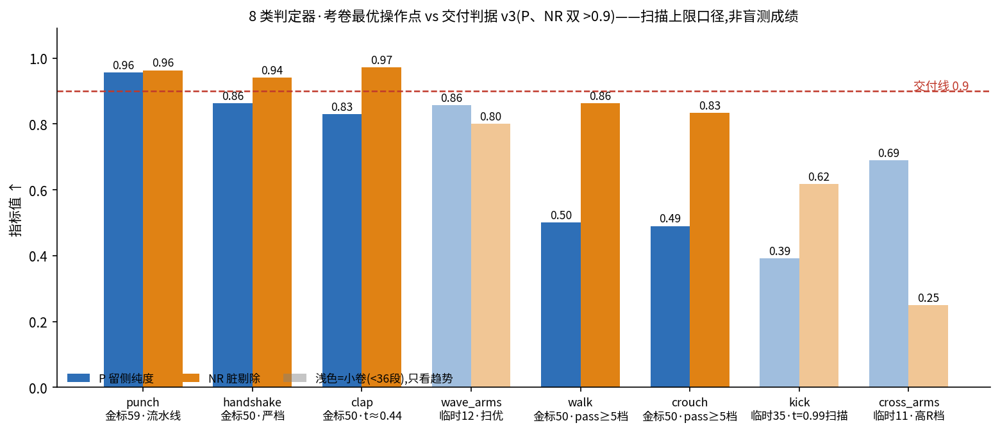

Generated from Markdown source: report/G1_MotionGPT/2026-08-23-lineup-status-and-delivery-gap.md
G1 动作段判定器 — 标签审计后全类现状与交付缺口盘点
阶段状态报告,续接 punch 线综合报告。 记录 2026-08-23 时点:全量标签审计 + 8 类重训后的成绩档位、交付判据 v3 下的差距、剩余交付闸门。
Conclusion
- 当前档位:8 类中 1 类过交付线——punch 流水线 P 0.956 / NR 0.963 双主指标过 0.9 (主表),未认证(参数预固定 + 盲测未做)。
- clap / handshake 属第二档:NR 已过线(0.971 / 0.941),P 差 0.04–0.07;punch 过线前 正是这个位置,靠裁头重判流水线补齐(两类是否复制该路线待 user 裁定)。
- walk / crouch 的 P 读数受考卷净段稀缺支配(每卷仅 11–12 段净;walk 同一模型跨三卷 P 0.50→0.92),数值上读不出方案差异;walk 的可用性证据来自 user 盲抽渲染复看: 12 段模型拒绝 = 9 对 / 3 debatable / 0 铁冤杀。kick / crouch 训练池净样本仅 6 / 12 段, 属净样本饥饿,任何头部/标签设计变不出净样本。
- 距完整交付剩 4 道闸(闸门表):①认证盲测;②8443 考卷扩容实测各类池脏率; ③交付前每类 20 段现场渲染抽查(user 2026-08-23 新增,walk/crouch 必做); ④kick / wave_arms / cross_arms 标注缺口(~40–70 → 200)。
Problem and terminology
研究问题:标签全量审计与重训之后,每类判定器在判据 v3 下处于什么档位,离"可交付的 自动清洗流水线"还缺哪些已定义的步骤。
| Term | 本报告 operational definition | Scope / not to confuse with |
|---|---|---|
| P / R(留侧) | P = 模型判 pass 的段中真净的比例(留侧纯度)↑;R = 真净段被留下的比例(净留存)↑ | R 是产出量参数,判据 v3 不设线 |
| NP / NR(拒侧) | NP = 判拒的段中真脏的比例 ↑;NR = 真脏段被剔除的比例(脏剔除)↑ | NP 低 = 冤杀多;与 P 互补 |
| 判据 v3 | P > 0.9 且 NR > 0.9 双主指标,R / acc 报告不设线(user 2026-08-22 裁定) | 取代 v1/v2 字典序判据 |
| 金标卷 / 临时卷 | 冻结只考不训的段级人工标注考卷;金标 = 50–59 段;临时卷 = 标注量未到位的类按对半切出 | 临时卷 11–35 段,单段 3–8 个百分点,只看趋势 |
| 扫描上限口径 | 阈值在考卷上扫出的最优操作点,数字偏乐观 | 交付成绩须"认证" = 参数预固定 + 未见批次盲测 |
| 窗级 MLP64 | 冻结编码器 0.2 s 令牌(实测感受野 ±0.6 s)上的 512→64→1 小头,段分 = 逐窗最大值 | 与全段上下文头相对(消融已败,见架构消融报告) |
| 裁头重判流水线 | punch 选定玩法:最严档报警全在段首 1 s 内 → 裁头 +0.3 s → 重判入池 | 与被否决的无条件裁头相对 |
| 渲染抽查闸 | 交付前每类抽 20 段全新 train 段现场渲染,对照模型判定逐条肉眼核对(user 2026-08-23 指定) | 是交付闸,不是每次重训后的例行检查 |
Method
| Setup 轴 | 本报告口径 |
|---|---|
| 标签权威 | fine_annotation_train.sqlite3;2026-08-23 全量审计:8 类 904 条逐条对照评论遍历,36 处修正落盘(整段脏被当余段净 27 + 区间解析断链 9),分层溯源保留原判 |
| 训练配方 | 真标注、×1 过采样、无截断全长编码、3 种子;修正标签后 8 类全部重训 |
| 成绩口径 | 每种子考卷全阈值扫描,词典序 min(P,NR)→R 选点;pass 侧 <5 段的档位判为假象档不采信;3 种子均值 |
| punch 例外 | 无标签修正未重训;引用流水线成绩(阈值 0.70 + 裁剪余量 0.3 s,考卷上选取) |
| Criterion | Threshold | Measured | Verdict |
|---|---|---|---|
| 判据 v3 双主指标 | P > 0.9 且 NR > 0.9 | punch 0.956 / 0.963;其余见主表 | punch 过(未认证),其余未过 |
| 认证 | 参数预固定 + 未见批次盲测复现 | 未执行 | 全类 PENDING |
| 渲染抽查闸 | 每类 20 段全新段肉眼核对 | 未执行(walk 曾做同式 12 段先导) | PENDING |
Run Spec 状态与来源声明
本报告为状态盘点,不含新实验;引用的各实验 spec 状态:
- walk 严重度软标签探针:有确认版探针 spec(user 2026-08-23 确认),原文与结果在
evidence_v2cleanexam.json#walk_severity_soft_probe_2026-08-23。 - punch 流水线:
NOT PREREGISTERED — 连续探针链收束,沿革见 punch 线综合报告 Method。 - 全类扫线 / kick 扩卷重训:user 会话内直接指令的复评("每个模型都汇报一下调阈值以后
最佳的数据" / "kick 70段了"),证据字段
post_audit_threshold_sweep_2026-08-23、kick_71seg_retrain_2026-08-23。 - 标签审计:user /goal 指令("每20条一个batch查看分析…遍历每个我们标注过的动作"),
账本
full_label_comment_audit。
Results

主表(考卷最优操作点,扫描上限口径,3 种子均值;↑ = 越高越好):
| 类 | 考卷(净/总) | 操作点 | acc↑ | P↑ | R↑ | NP↑ | NR↑ | 判据 v3 |
|---|---|---|---|---|---|---|---|---|
| punch | 32/59 金标 | 流水线(0.70+裁头) | 0.746 | 0.956 | 0.562 | — | 0.963 | 过(未认证) |
| handshake | 33/50 金标 | 严档 | 0.447 | 0.863 | 0.192 | 0.375 | 0.941 | 差 P 0.04 |
| clap | 16/50 金标 | t≈0.44 | 0.760 | 0.830 | 0.312 | 0.750 | 0.971 | 差 P 0.07 |
| wave_arms | 7/12 临时 | 扫优 | 0.833 | 0.857 | 0.857 | 0.800 | 0.800 | 小卷,趋势接近 |
| walk | 11/50 金标 | pass≥5 档 | 0.780 | 0.500 | 0.485 | 0.856 | 0.863 | 未过(读数受限) |
| crouch | 12/50 金标 | pass≥5 档 | 0.753 | 0.490 | 0.500 | 0.841 | 0.833 | 未过(净样本饥饿) |
| kick | 8/35 临时 | t=0.99 扫描 | 0.667 | 0.392 | 0.833 | 0.926 | 0.617 | 未过(净样本饥饿) |
| cross_arms | 7/11 临时 | 高 R 档 | 0.697 | 0.689 | 0.952 | 0.833 | 0.250 | 小卷,未过 |
walk 的第二类证据(数值考卷之外的盲抽渲染复看):
| 抽检 | 设计 | user 裁定 |
|---|---|---|
| 全新 20 段 @严档 | 拒 18/留 2,拒段随机渲染 6 段全盲复看 | 4 铁脏 + 2 debatable,零铁冤杀 |
| val 段中报警 6 段 | 7 月已标 pass、现模型段中报警的段渲染复看 | 5 真有问题 + 1 debatable |
| 合计 12 段拒绝 | — | 9 对 / 3 debatable / 0 铁冤杀;"7月标准确实比现在低" |
交付闸门表(离交付有多远,按类):
| 类 | 已就位 | 缺口 | 所需动作(量级) |
|---|---|---|---|
| punch | 流水线双过线;金标卷;变体标准册 | 认证 + 渲染抽查 | 参数预固定后盲测一批新标注(~50 段)+ 20 段渲染 |
| walk | 盲抽方向校验;金标卷 | P 读数被净段稀缺卡死 + 认证 + 渲染抽查(必做) | 标注补净段扩卷,或直接按裁头流水线核算后认证 |
| clap / handshake | NR 过线;金标卷 | P 差 0.04–0.07 | 裁头重判核算是否复制,user 裁定 |
| crouch | 金标卷 | 净样本饥饿(池净 12) | 标注,优先补净段;渲染抽查必做 |
| kick | 扩容临时卷 | 净样本饥饿(池净 6;脏率 80%,净样本最贵) | 标注 71→200(预期净 ~40) |
| wave_arms / cross_arms | 临时卷 | 标注量(40/39 条)+ 无正式金标卷 | 标注至 200 后切金标卷再评 |
Analysis
- 测量:lineup 呈三档——双过线(punch)、差 P 一项(clap/handshake)、读数或净样本受限 (walk/crouch/kick + 两小卷类);差距的性质各不相同,主表与闸门表逐类对应。
- 测量:walk 数值与盲抽结论的分歧已有定论(user 裁定):val 表面一致率低是 7 月标签标准 偏松所致,非模型误差;"binary 标签压平轻重"假设按预注册判据关账(金标卷 +0.056 < 0.07, 重切分方向翻负)。
- 测量:kick / crouch 的瓶颈是净样本供给(池内 6 / 12 段)——kick 按当前 80% 脏率,标满
200 条预期净样本仍只有 ~40 段,是 8 类中净样本获取成本最高的类(
待验证:脏率随标注 推进可能变化)。 - next(user 已定向):标注继续推向 200/类;交付前执行渲染抽查闸。认证盲测批次与 8443 扩容的排期、clap/handshake 是否复制裁头重判路线,待 user 裁定。
Appendix
头条数字代入式与证据路径
- punch 流水线 P(seed0)= 入池真净/入池总数 = 23/24 = 0.958,3 种子均值 0.956; NR = 1 − 1/27 = 0.963
- walk 跨卷波动:同一 binary 臂 P@R≥0.4 = 0.500(金标)/ 0.851(重切分1)/ 0.917(重切分2)
- kick 净样本账:全类净 14 = 考卷 8 + 训练池 6;脏率 = 57/71 = 0.80
- 证据档(均在
logs/g1_motiongpt/zhead_multi_punch_real60/evidence_v2cleanexam.json): full_label_comment_audit(审计账本 + user 复看单)post_audit_threshold_sweep_2026-08-23(全类扫线,含逐类假象档记录)kick_71seg_retrain_2026-08-23(扩卷 + 重训 + 排序诊断)walk_severity_soft_probe_2026-08-23(确认版 spec + 三臂三卷结果)walk_reject_blind_spotcheck/walk_val_agreement_and_vintage(盲抽与 vintage 结论)- 判据与流水线登记:
outputs/g1_motiongpt/zhead_best_v2_manifest.json(acceptance_criteria_v3/punch_pipeline_v1/variant_standards/models_v3_current) - 考卷:
outputs/g1_motiongpt/test_sets/(金标卷 JSON + ids;kick 临时卷 08-23 扩容, 旧卷备份.bak-2026-08-23-pre-expand) - 部署中模型:
logs/g1_motiongpt/zhead_mlp_<cls>_v1/zhead.pt(8 类,审计后重训版, 标注前端 8769 在用)
walk 盲抽渲染媒体路径
- 全新 20 段拒段抽检 6 段:
outputs/walk_reject_showcase/*.mp4(+ provenance.json) - val 段中报警抽检 6 段:
outputs/walk_val_midalarm_showcase/*.mp4(+ provenance.json)
已知限制
- 全表为扫描上限口径:阈值在考卷上选取,数字偏乐观;实测预固定 vs 扫线的 NR 差距曾达 0.28–0.60,交付引用必须走认证工序。
- 小卷类(wave_arms 12 / cross_arms 11 / kick 35)单段 3–8 个百分点,只作趋势读数。
- punch 流水线成绩未认证;walk 盲抽 n=12 仅方向校验,不构成 NP 的统计估计。
- 标签审计修正了考卷内若干段的判定,本报告数字与审计前报告不可直接对比(尺子变了)。